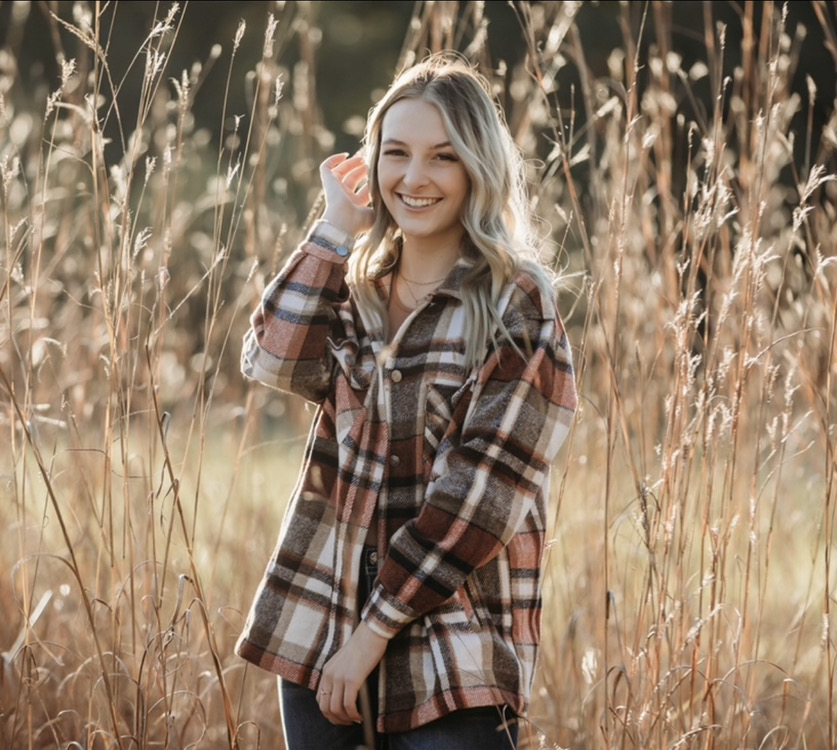
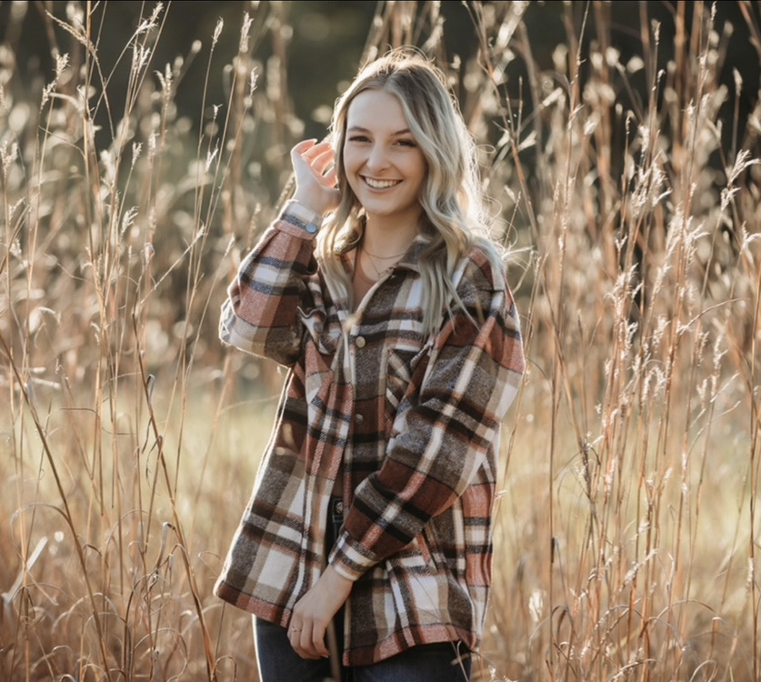

Wags for Mags!

Wags for Mags Student Trainers
What is Wags for Mags?
“Wags for Mags” is a student-led organization at Bradley University that has teamed up with Paws Giving Independence to train service dogs to assist those with disabilities. “Wags For Mags” was launched in 2012 to involve students with the service dog training process. The program focuses on getting Bradley student volunteers, fundraising, and dog training. Dr. Stacie Bertram, the faculty advisor for the group, states, “It’s neat to see the dogs blossom in this environment, know they go on to serve families with disabilities and it’s nice to have Bradley be a part of that.”
Where does our name come from?
“Wags for Mags” was named by Stacie and Rob Bertram who are physical therapy professors at Bradley University. The organization is named in memory of their daughter, Maggie, who passed away in a car accident in March 2012. Maggie was a longtime volunteer of PGI and trained a service dog named Marley.
What is a student trainer?
Bradley students participate as student trainers or foster homes for service dogs. Each student trainer is assigned a dog or dogs to work with during the week. During the time with the dog, the trainer goes through a normal routine of attending classes and running errands, while also teaching skills to the dog. The trainer is responsible for the dog for the duration of the dog’s visit on campus, and he or she must complete a training report at the end of the day.
Calendar
You can view our calendar to find all of our upcoming fundraisers, events, and Wags classes in Markin!
Get Involved

Wags for Mags Student Trainers
Our pups support Bradley Braves Athletics!
How to get involved
We typically put out student trainer applications late Septemeber of the Fall semester. These applications consist of a written application, we usually take about a week to then narrow this selection pool down. If selected for the next round of the application process you will be asked to come in for a one-on-one interview with one of our trainers, as well as a handeling session where you will use the skills you have learned in out bi-weekly Markin classes. If you are one of the lucky who trainers who advances past this round you will then have to complete a handeling session with trainers from our parent program, Paws Giving Independence! They have the final say as to who will be selected as trainers in the program. Below you will find the link to student trainer applications.
Lucy at our Valentines Day fundraisers!
How to become a volunteer
We know that becoming a trainer is a big commitment that not everyone has the time for, but that does not mean you cannot get involved with Wags in different ways! We have Marking training classes biweekly on Mondays and everyone is welcome! We teach you baisc commands and let you hangout with the dogs. It is a great way to get farmiliar with the commands, dogs, and other trainers if you chose to apply to become a student trainer later on! Below yuo can find the sign up sheet to be able to attend these classes. Please make sure you fill out the wavier before class or you will not be able to handle any of our dogs!
How to support Wags for Mags
Wags for Mags always has fudrasiers going on that help to support our pups! All proceeds go directly to our organization to be able to buy food, treats, and any other nessecities our dogs may need. Our current fundrasier is with Krispy Kreme where you can buy a dozen donuts for pick up in the Student Center, or a digital dozen to be picked up at any Krispy Kreme location. We also have an ongoing fundraiser selling custom bandanas for any of your furry friends. Anything helps and we appricate your endless support! You can find the forms for both of our fundraisers below!
Banadana Order FormKrispy Kreme Student Center Pick-up
Krispy Kreme Digital Dozen


 
